3분 요약 — 전체 흐름
자세한 내용에 들어가기 전에, 전체가 어떻게 돌아가는지 먼저 봅니다. 할 일은 네 단계뿐입니다.
직원은 설치할 앱이 없습니다. 휴대폰 인터넷 창에서 주소만 열면 됩니다. 매일 쓰기 편하게 홈 화면에 추가를 해 두면 앱처럼 아이콘이 생깁니다.
얼굴인증은 선택입니다. 쓰기 싫은 직원은 위치(GPS)만으로 출퇴근할 수 있습니다. 회사가 강제할 수 없도록 처음부터 그렇게 만들어져 있습니다.
회원가입 — 회사를 만듭니다
관리자 한 분만 가입하면 됩니다. 직원은 따로 가입하지 않고, 나중에 관리자가 보내는 초대 링크로 들어옵니다.
가입할 때 적는 것
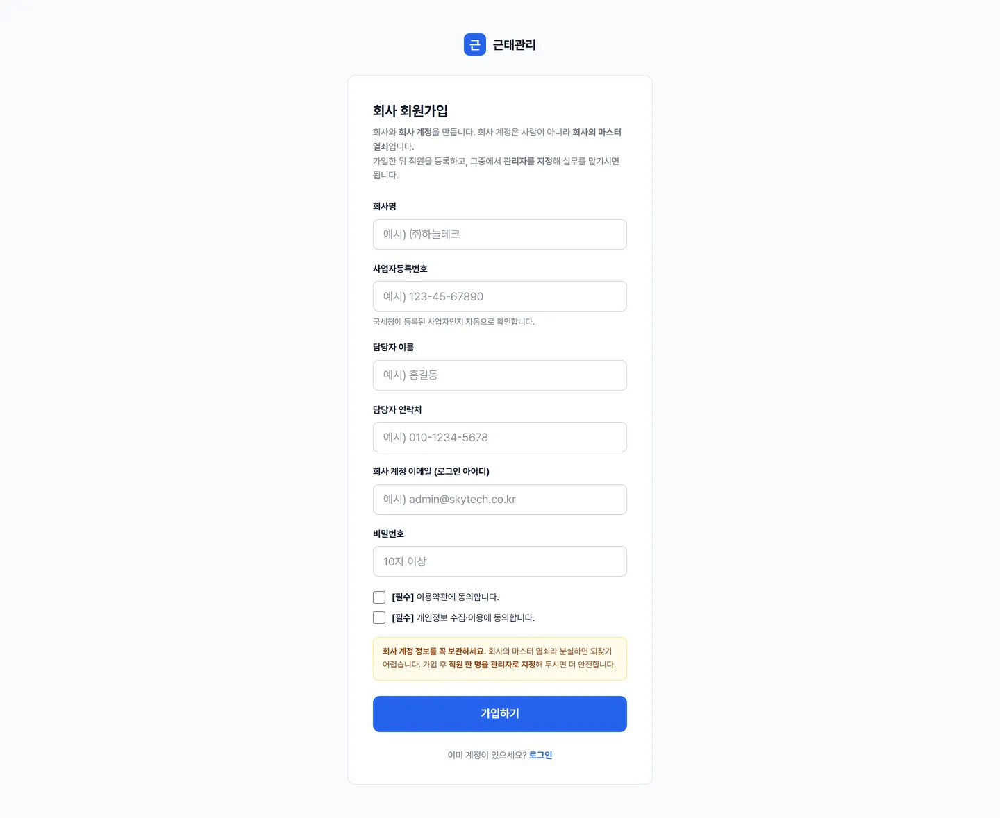
| 항목 | 설명 |
|---|---|
| 회사 이름 | 직원 화면 위쪽에 계속 표시됩니다. 사업자등록증에 있는 이름을 그대로 적으시면 됩니다. |
| 사업자등록번호 | 나중에 세금계산서를 발행할 때 씁니다. |
| 담당자 이름·휴대폰 | 관리자 본인입니다. 휴대폰 번호는 비밀번호를 잊었을 때 본인 확인에 씁니다. |
| 이메일 | 로그인할 때 쓰는 아이디입니다. 회사 메일을 쓰시는 편이 좋습니다. |
| 비밀번호 | 10자 이상. 회사 전체 근태 기록을 여는 열쇠이니 다른 곳과 겹치지 않게 정해 주세요. |
이 계정은 회사의 모든 직원 기록을 볼 수 있는 계정입니다. 비밀번호를 다른 사람과 공유하지 마세요. 관리자가 두 명 필요하면 공유하지 말고 직원을 등록한 뒤 관리자로 지정하시면 됩니다(03장 참고).
로그인
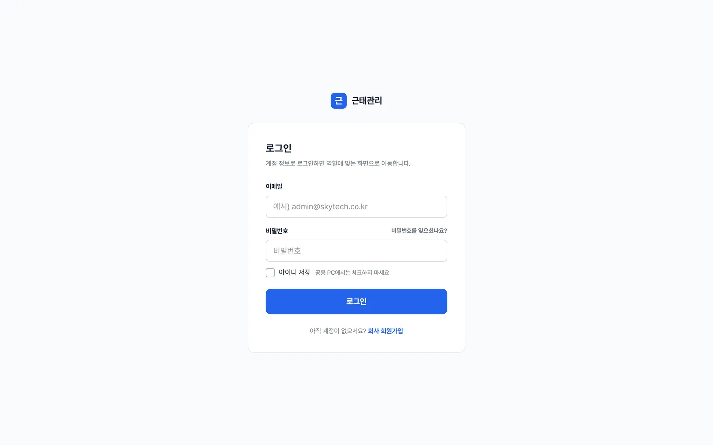
처음 설정 — 근무 기준과 회사 위치
가입 직후 딱 한 번 하는 설정입니다. 이걸 정해야 지각·조퇴·실근무시간이 계산됩니다. 나중에 [설정] 화면에서 언제든 바꿀 수 있습니다.
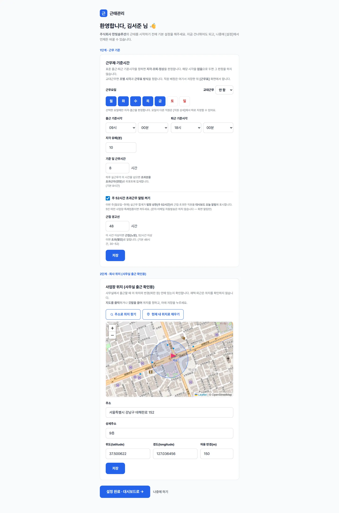
1단계 · 근무 기준
| 항목 | 무엇을 정하나 | 이 값이 쓰이는 곳 |
|---|---|---|
| 출근 시각 | 예: 09:00 | 이 시각을 넘겨 출근하면 지각으로 표시됩니다. |
| 퇴근 시각 | 예: 18:00 | 이 시각보다 일찍 퇴근하면 조퇴로 표시됩니다. |
| 지각 유예 | 예: 10분 | 9시 10분까지는 지각으로 보지 않습니다. |
| 기준 일 근무시간 | 예: 8시간 | 하루에 이 시간을 넘긴 만큼이 초과근무로 집계됩니다. |
| 근무 요일 | 예: 월~금 | 여기 없는 요일은 출근하지 않아도 결근으로 보지 않습니다. |
2단계 · 회사 위치
주소를 검색해서 사무실을 찍고, 허용 반경(예: 150m)을 정합니다. 직원이 출근을 누를 때 이 반경 안에 있으면 사무실, 밖에 있으면 외근으로 기록됩니다.
반경을 너무 좁게 잡으면(예: 20m) 건물 안에서도 위치가 흔들려 사무실인데 외근으로 찍히는 일이 생깁니다. 100~200m 정도를 권해 드립니다. 위치를 막으려는 목적이 아니라 "어디서 찍었는지 기록"을 남기는 것이 목적입니다.

직원 등록 — 가장 중요한 부분
직원을 넣는 방법은 두 가지입니다. 대부분은 초대 링크 방식이 편합니다. 그 전에 부서와 직급을 먼저 만들어 두면 정리가 깔끔합니다.
먼저 · 부서와 직급 만들기
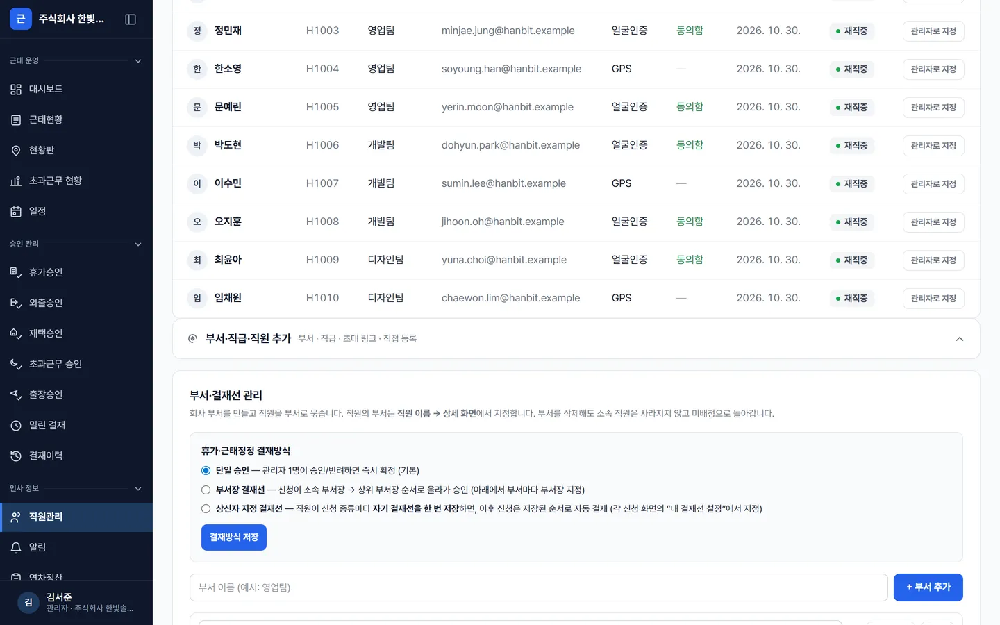
부서를 만듭니다. 칸에 "영업팀"처럼 적고 + 부서 추가를 누릅니다. 부서는 나중에 직원 상세 화면에서 한 명씩 지정합니다.
직급을 만듭니다. 사원·대리·과장처럼 적고 순서를 정합니다. 위에 있을수록 상급자이고, 결재선에서 "누가 윗사람인지"를 판별할 때 씁니다.
결재 방식을 고릅니다. 직원이 10~20명 규모라면 기본값인 단일 승인(관리자 한 명이 승인하면 끝)이 가장 간단합니다.
방법 A · 초대 링크로 직원이 직접 가입 (권장)
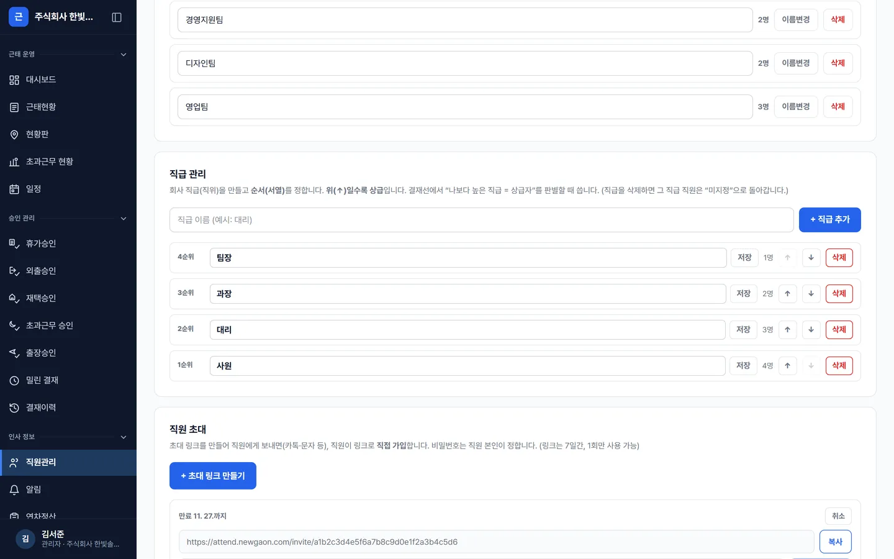
+ 초대 링크 만들기를 누릅니다. 링크가 한 줄 생깁니다.
복사를 눌러 카톡이나 문자로 직원에게 보냅니다. 아래 칸에 휴대폰 번호를 넣고 문자로 보내기를 눌러도 됩니다.
직원이 링크를 열어 이름·이메일·비밀번호를 직접 정하면 등록이 끝납니다. 비밀번호는 직원 본인만 압니다.
초대 링크는 7일 동안, 한 번만 쓸 수 있습니다. 한 사람이 쓰면 그 링크는 닫히므로 직원 수만큼 만들어 각각 보내 주세요. 기간이 지났으면 새로 만들면 됩니다.
방법 B · 관리자가 직접 등록
직원이 링크를 열기 어려운 경우에 씁니다. 같은 화면 맨 아래 [직원 추가]에서 이름과 이메일만 넣으면 계정이 바로 만들어집니다. 이때는 임시 비밀번호가 나오므로 직원에게 전달하고, 직원이 첫 로그인에서 본인 비밀번호로 바꾸게 됩니다.
등록된 직원 확인하기
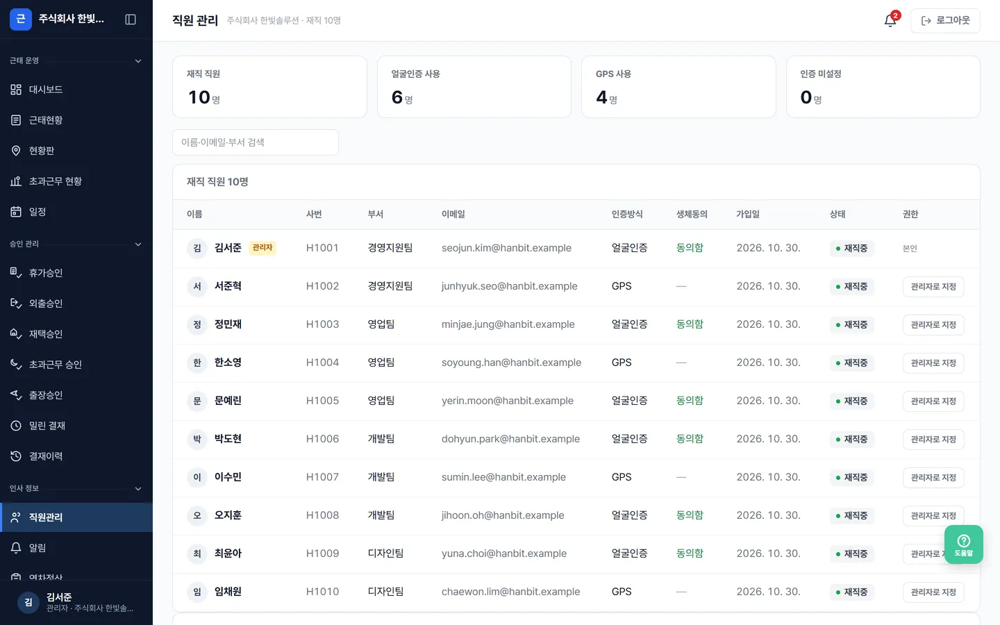
- 관리자를 더 두려면 — 목록 오른쪽 관리자로 지정을 누릅니다.
- 부서·직급·입사일을 넣으려면 — 직원 이름을 눌러 상세 화면에서 수정합니다.
- 퇴사자가 생기면 — 상세 화면에서 퇴사 처리합니다. 기록은 지워지지 않고 보존됩니다.
직원 휴대폰 사용법
직원이 보는 화면입니다. 이 장만 따로 뽑은 직원용 안내서가 함께 있으니, 직원들에게는 그쪽을 보내시면 됩니다.
1 · 초대 링크를 열고 가입
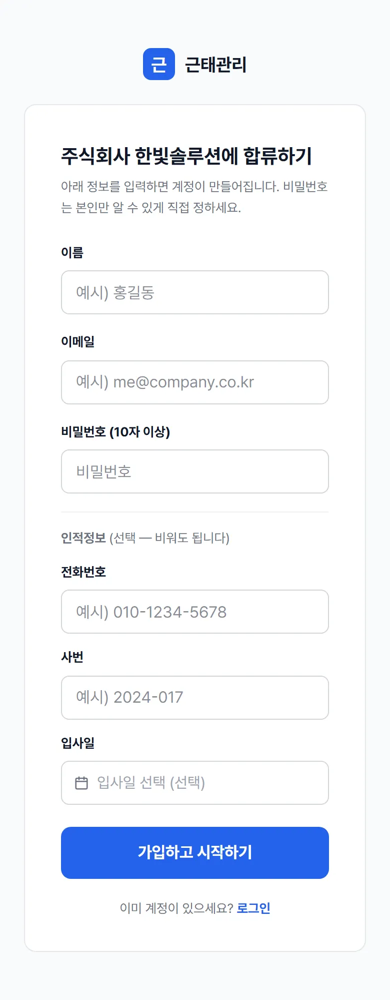
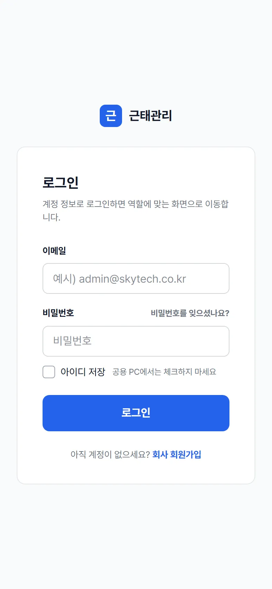
2 · 출퇴근 방법 고르기

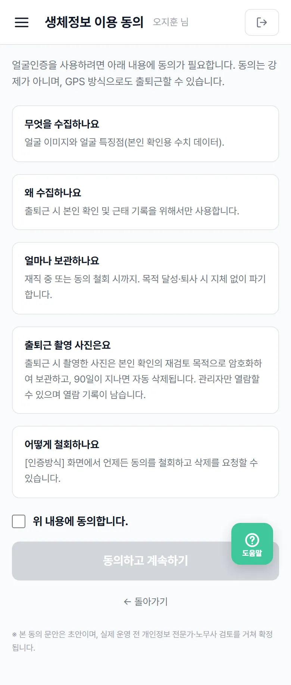
얼굴은 생체정보(민감정보)라서 법이 특별히 보호합니다. 그래서 회사가 직원에게 얼굴인증을 강제할 수 없습니다. 원하지 않는 직원은 GPS만으로 똑같이 출퇴근할 수 있고, 관리자 화면에서도 두 방식이 똑같이 기록됩니다.
3 · 얼굴 등록 (얼굴인증을 고른 직원만)

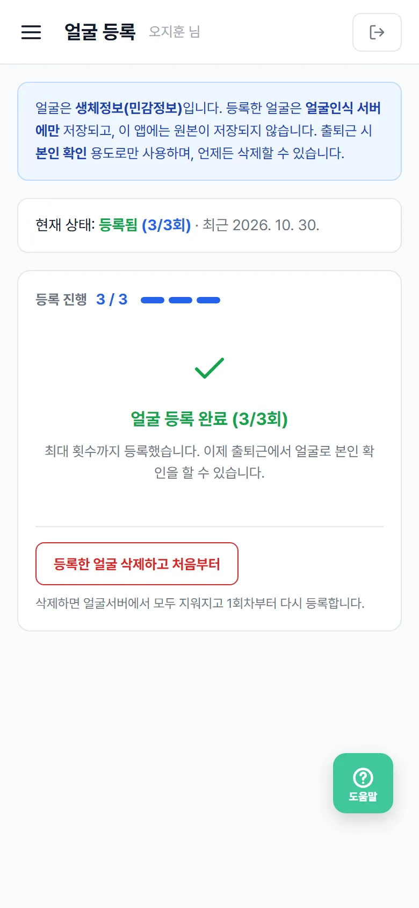
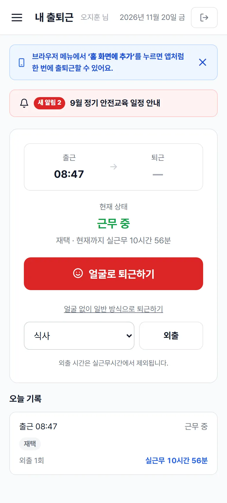
4 · 매일 출근·퇴근 누르기
 1
2
3
4
5
1
2
3
4
5
- 오늘의 출근·퇴근 시각입니다. 아직 퇴근 전이면 오른쪽은 비어 있습니다.
- 현재 상태. 「근무 중」과 지금까지의 실근무시간이 같이 보입니다.
- 큰 버튼 하나만 누르면 됩니다. 출근 전에는 「출근하기」, 근무 중에는 「퇴근하기」로 바뀝니다.
- 외출은 사유를 고르고 누릅니다. 돌아와서 「복귀」를 누르면 그 사이 시간은 실근무에서 빠집니다.
- 오늘 기록. 사무실인지 외근인지, 위치가 확인됐는지가 표시됩니다.
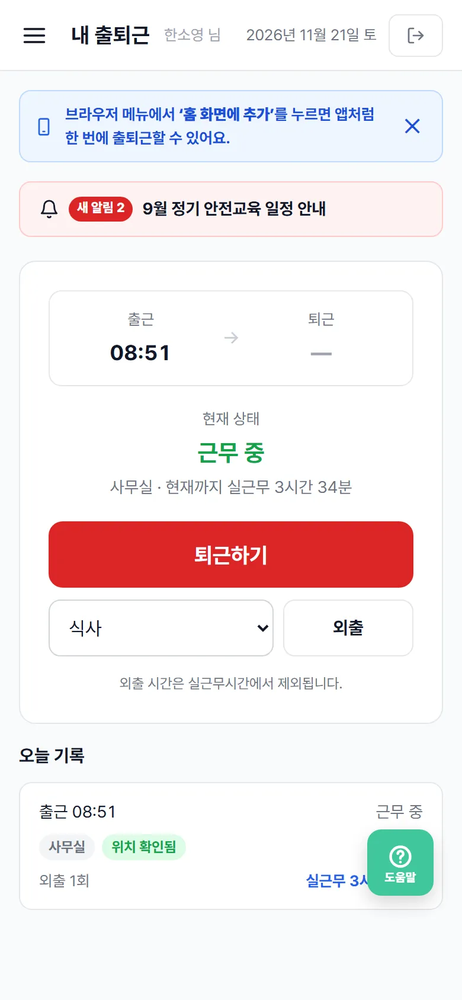

5 · 내 기록 보기와 신청하기

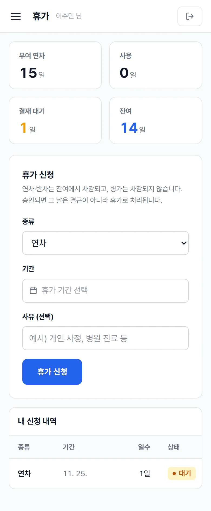

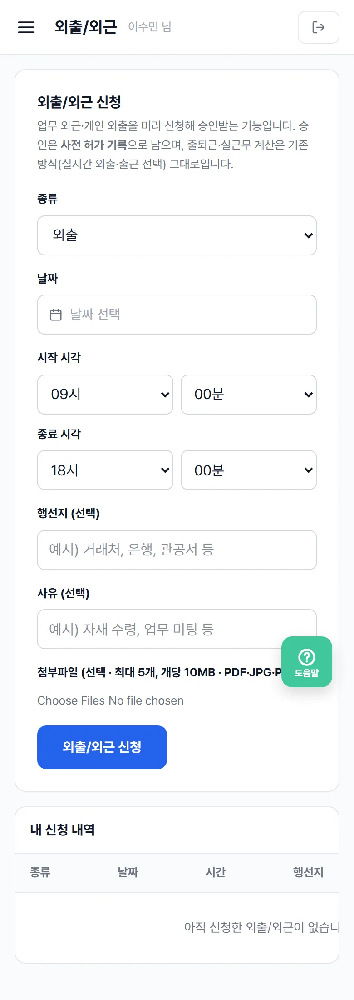

근태 현황 보기
관리자가 매일 보는 화면입니다. 왼쪽 메뉴 [근태 운영] 묶음에 모여 있습니다.
대시보드 — 오늘 한눈에
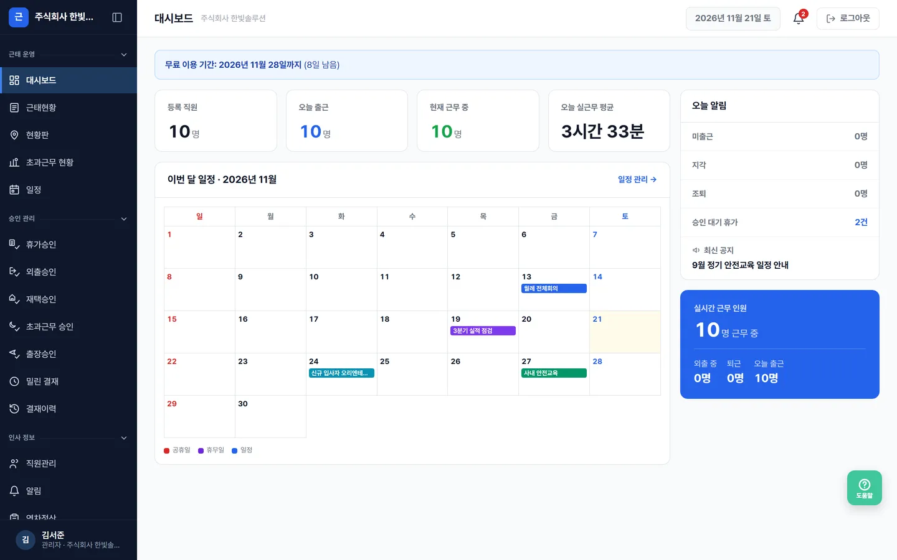
1 2 3 4 5- 무료 이용 기간이 언제까지인지 알려 줍니다.
- 오늘 숫자 넉 장. 등록 직원 / 오늘 출근 / 지금 근무 중 / 오늘 실근무 평균.
- 오늘 알림. 미출근·지각·조퇴가 몇 명인지, 승인 기다리는 휴가가 몇 건인지 바로 보입니다. 여기만 봐도 오늘 챙길 일이 끝납니다.
- 실시간 근무 인원. 지금 몇 명이 일하고 있는지입니다.
- 왼쪽 메뉴. 모든 화면이 여기 모여 있습니다.
근태 현황 — 날짜별·직원별 기록
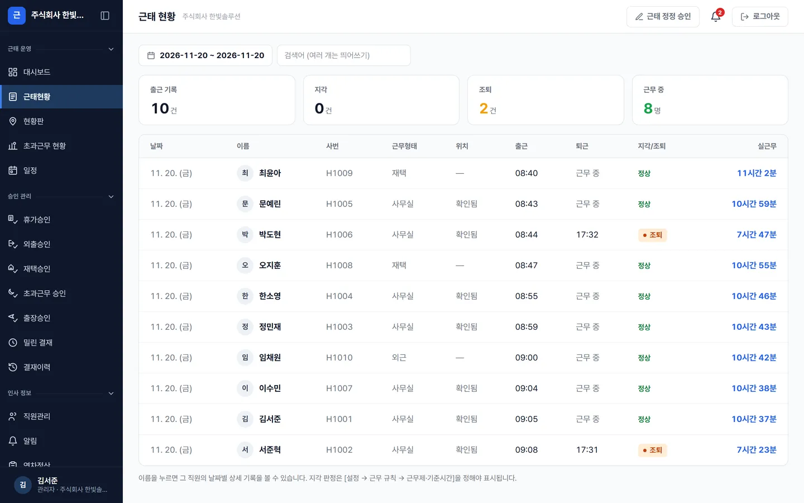
1 2 3 4- 기간을 고릅니다. 하루만 볼 수도, 한 달을 볼 수도 있습니다.
- 검색. 이름·사번·부서로 찾습니다.
- 그 기간의 요약 — 출근 기록 / 지각 / 조퇴 / 지금 근무 중.
- 실근무시간. 외출 시간을 뺀 진짜 일한 시간입니다.
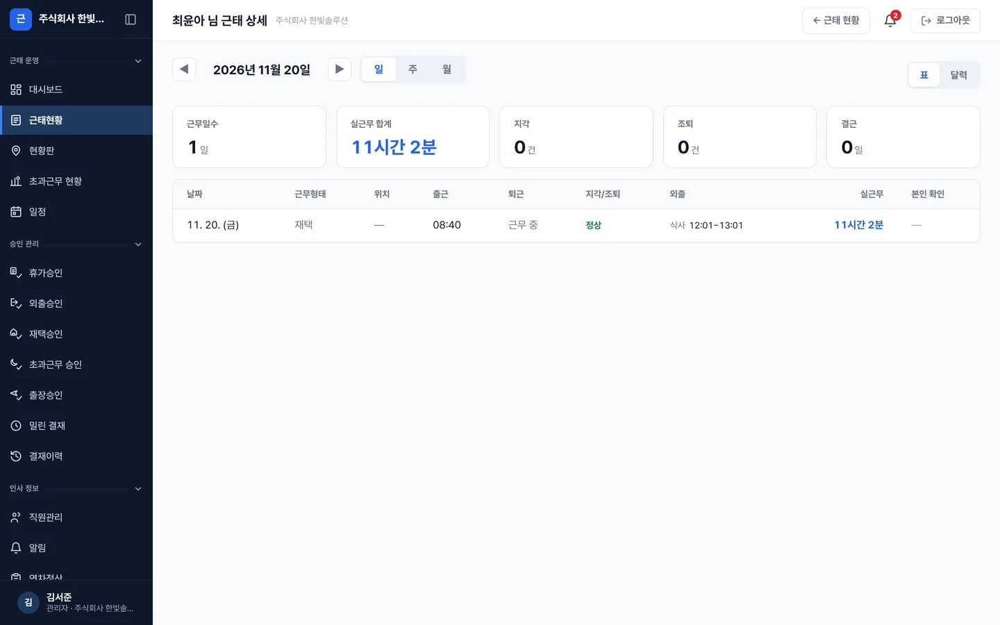
리포트 — 월별 집계와 법정 기록
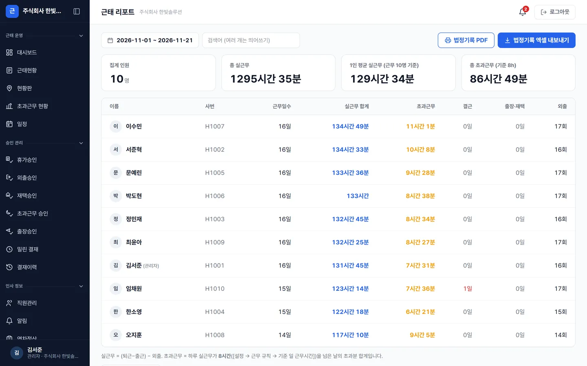
5인 이상 사업장은 근로시간 기록을 3년간 보관해야 합니다. 이 리포트에서 내보낸 파일이 그 기록이 됩니다. 매월 한 번 내려받아 두시면 됩니다.
현황판 — 지금 어디서 일하고 있나
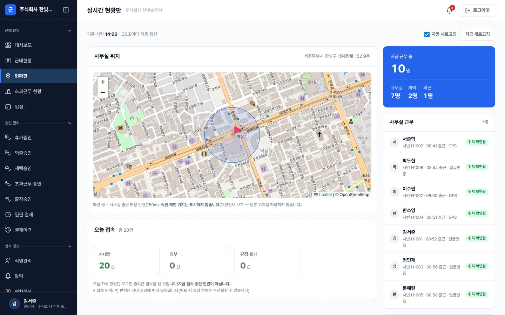
초과근무 현황 — 주 52시간 챙기기
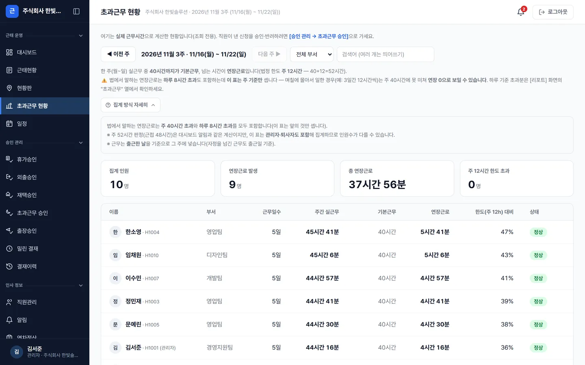
신청과 승인
직원이 휴대폰으로 신청하면, 관리자 화면 왼쪽 [승인 관리] 묶음에 쌓입니다. 승인하거나 반려하면 직원에게 바로 반영됩니다.
| 직원이 신청하는 것 | 관리자가 보는 메뉴 | 언제 쓰나 |
|---|---|---|
| 휴가 | 휴가승인 | 연차·반차·경조사 등 |
| 외출외근 | 외출승인 | 근무 중 잠시 나갈 때 |
| 재택 | 재택승인 | 집에서 일하는 날 |
| 초과근무 | 초과근무 승인 | 야근을 미리 신청할 때 |
| 출장 | 출장승인 | 하루 이상 외부 근무 |
| 정정 | 근태 정정 승인 | 잘못 찍힌 기록을 고칠 때 |
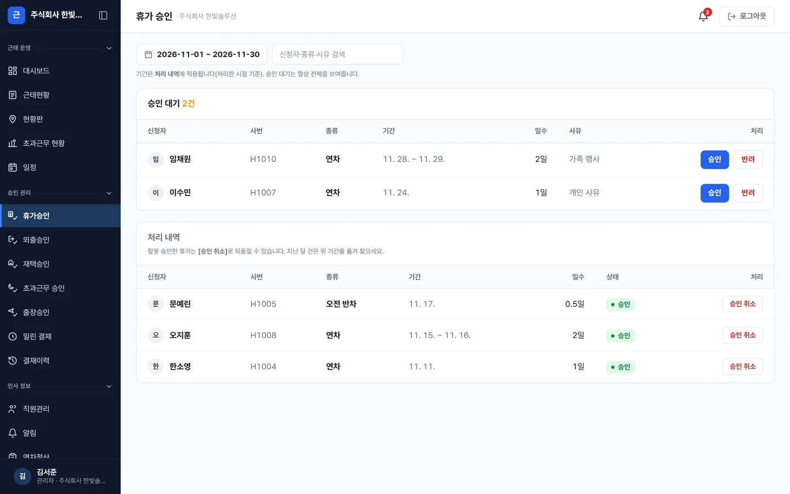
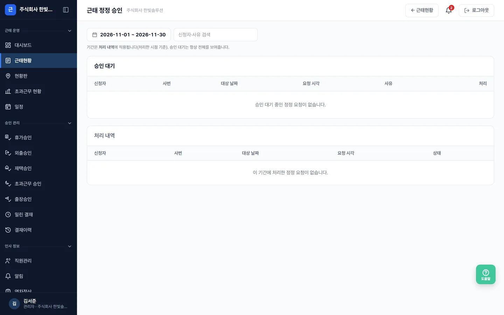
승인을 깜빡해도 괜찮습니다. 대기 중인 건수는 대시보드 [오늘 알림]과 메뉴 옆 숫자 배지에 계속 표시되고, [밀린 결재] 메뉴에 모여 있습니다. 지난 기록은 [결재이력]에서 찾습니다.
그 밖의 화면
자주 쓰지는 않지만 알아 두면 좋은 화면들입니다.
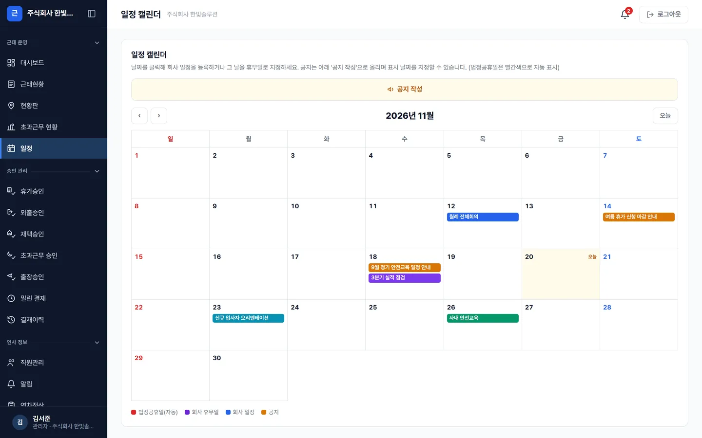
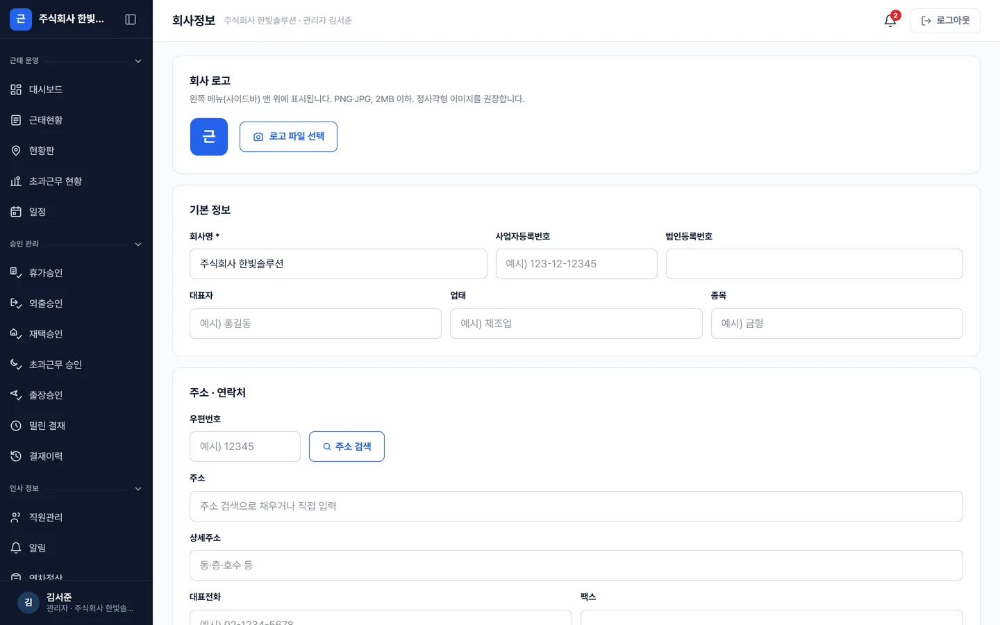
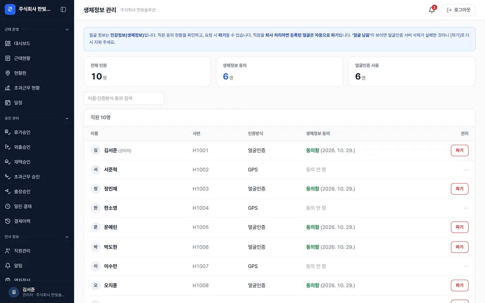
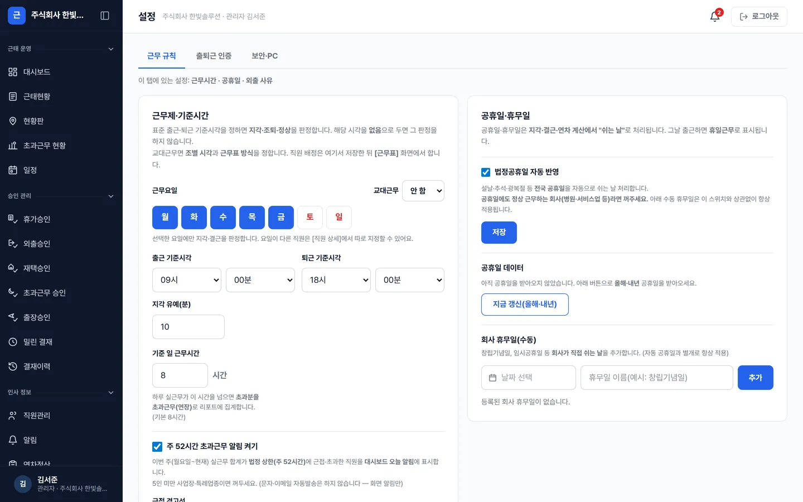
요금
직원 수 구간에 따라 월 요금이 정해집니다. 사람이 늘어도 한 명씩 올라가지 않고, 구간을 넘을 때만 바뀝니다.
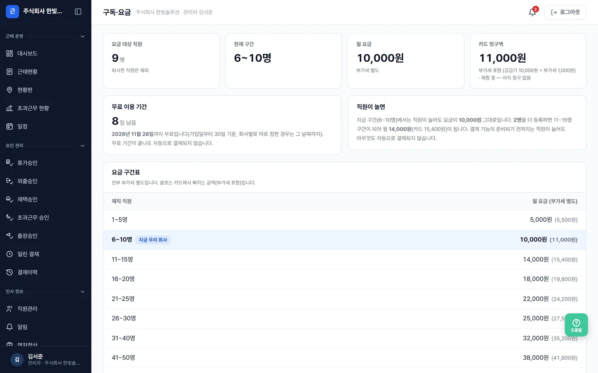
| 직원 수 | 월 요금(부가세 별도) | 직원 수 | 월 요금(부가세 별도) |
|---|---|---|---|
| 1~5명 | 5,000원 | 26~30명 | 25,000원 |
| 6~10명 | 10,000원 | 31~40명 | 32,000원 |
| 11~15명 | 14,000원 | 41~50명 | 38,000원 |
| 16~20명 | 18,000원 | 51~70명 | 49,000원 |
| 21~25명 | 22,000원 | 71~100명 | 65,000원 |
| 101~150명 | 90,000원 | 151명 이상 | 별도 협의 |
- 관리자 계정은 요금에 세지 않습니다. 직원만 셉니다.
- 무료 이용 기간이 끝나기 전까지는 청구되지 않습니다. 남은 기간은 대시보드 맨 위에 표시됩니다.
지금은 카드 결제 기능을 준비 중입니다. 요금 확인은 위 화면에서 하실 수 있고, 실제 결제 방법은 따로 안내해 드립니다.
자주 묻는 질문
실제로 가장 많이 나오는 질문들입니다. 제목을 누르면 답이 펼쳐집니다.
직원이 「출근하기」를 눌렀는데 안 됩니다.
대부분 위치 권한 때문입니다. 휴대폰이 "위치를 사용하도록 허용하시겠습니까?"라고 물을 때 허용을 눌러야 합니다. 실수로 거부했다면 휴대폰 설정에서 브라우저(크롬·사파리)의 위치 권한을 다시 켜고 화면을 새로고침하면 됩니다.
권한을 켰는데도 안 되면 사무실 허용 반경 밖일 수 있습니다. 이때도 출근은 됩니다 — 외근으로 기록될 뿐입니다.
퇴근 누르는 걸 잊고 퇴근했습니다.
직원이 [정정] 메뉴에서 그날 퇴근 시각을 적어 신청하면, 관리자가 [근태 정정 승인]에서 승인해 바로잡습니다. 시스템이 임의로 퇴근 시각을 지어내지 않는 이유는, 실제 퇴근 시각은 본인만 알기 때문입니다.
직원이 얼굴 등록을 하기 싫어합니다.
하지 않아도 됩니다. [인증방식]에서 GPS만 사용하기를 고르면 위치로만 출퇴근합니다. 기록되는 내용과 관리자 화면은 똑같습니다. 얼굴은 생체정보라서 법적으로 강제할 수 없습니다.
초대 링크를 보냈는데 "사용할 수 없는 초대"라고 나옵니다.
링크는 7일간, 한 번만 쓸 수 있습니다. 기간이 지났거나 누군가 이미 썼다면 [직원관리] → [부서·직급·직원 추가] → [직원 초대]에서 새 링크를 만들어 다시 보내 주세요.
비밀번호를 잊었습니다.
로그인 화면의 [비밀번호를 잊으셨나요?]를 누르면 됩니다. 직원 비밀번호는 관리자도 볼 수 없게 되어 있어(암호화 저장), 재설정만 가능합니다.
휴대폰에서 앱처럼 쓰고 싶습니다.
따로 설치할 앱은 없습니다. 브라우저에서 주소를 연 뒤 메뉴 → 홈 화면에 추가를 누르면 바탕화면에 아이콘이 생겨 앱처럼 한 번에 열립니다. 화면 위쪽에 이 안내가 자동으로 뜹니다.
직원이 퇴사했습니다. 기록은 어떻게 되나요?
[직원관리]에서 이름을 눌러 퇴사 처리하면 목록에서 내려갑니다. 지난 근태 기록은 지워지지 않고 그대로 보존됩니다(근로기준법상 3년 보관). 요금 대상에서는 빠집니다.
토요일에 출근하지 않았는데 결근으로 나옵니다.
[설정] → 근무 규칙 → 근무 요일을 확인해 주세요. 거기에 들어 있는 요일만 "근무 예정일"로 보고 결근을 판정합니다. 토요일이 들어가 있다면 빼시면 됩니다.
용어 풀이
화면에 나오는 말 중 헷갈리기 쉬운 것들입니다.
| 용어 | 뜻 |
|---|---|
| 실근무시간 | 퇴근 시각에서 출근 시각을 뺀 뒤, 외출한 시간을 다시 뺀 것입니다. 자리에 있던 시간이 아니라 실제로 일한 시간입니다. |
| 초과근무 | 하루 실근무가 기준 일 근무시간(보통 8시간)을 넘은 만큼입니다. 넘은 날만 합산됩니다. |
| 지각 / 조퇴 | [설정]에서 정한 출근·퇴근 시각이 기준입니다. 지각 유예 시간(예: 10분)까지는 지각으로 보지 않습니다. |
| 정정 | 잘못 찍힌 출퇴근 기록을 고쳐 달라고 직원이 올리는 신청입니다. 관리자가 승인해야 반영됩니다. |
| 결재선 | 신청이 누구를 거쳐 승인되는지의 순서입니다. 작은 회사는 단일 승인(관리자 1명)으로 두는 것이 간편합니다. |
| 인증방식 | 출퇴근을 누를 때 본인임을 확인하는 방법. 얼굴인증 또는 GPS(위치) 중 직원이 고릅니다. |
| 생체정보 | 얼굴처럼 몸에서 나오는 정보. 법이 특별히 보호하는 민감정보라 별도 동의·암호화 보관·파기 절차가 필요합니다. |
| 허용 반경 | 사무실 위치를 중심으로 "여기 안이면 사무실 출근"으로 보는 거리입니다(예: 150m). |
이 안내서의 화면 그림에 대하여
그림은 실제 프로그램 화면을 그대로 찍은 것입니다. 다만 들어 있는 회사명·직원 이름·기록은 설명을 위해 만든 가상의 예시이며, 실제 고객사나 실존 인물이 아닙니다.
화면은 계속 좋아지고 있어서 세부 모양이 조금 다를 수 있습니다. 설명대로 눌러도 찾기 어려운 것이 있으면 알려 주세요.